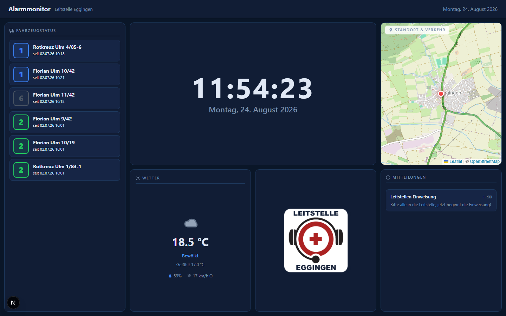
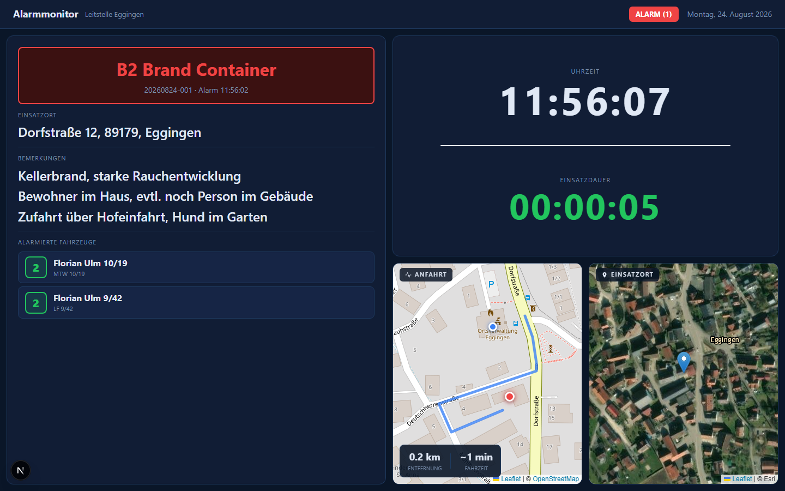

Alarmmonitor
Der Alarmmonitor ist für den großen Bildschirm im Gerätehaus gedacht – er läuft dauerhaft im Hintergrund und wechselt automatisch zwischen Ruhezustand und Alarm-Ansicht.
Standby: der Ruhezustand
Solange kein Einsatz läuft, zeigt der Monitor: Uhrzeit und Datum, den Status aller Fahrzeuge, das aktuelle Wetter, das Logo der Wache sowie aktuelle Mitteilungen.

Browser blockieren automatisch abgespielten Ton, solange niemand mit der Seite interagiert hat. Klicke deshalb beim ersten Aufruf des Alarmmonitors einmal auf „Audio aktivieren“ – danach spielt der Alarmton bei einem neuen Einsatz automatisch ab.
Alarm: wenn ein Einsatz eingeht
Sobald ein Einsatz alarmiert wird, wechselt der Monitor automatisch und ohne Zutun in die Alarm-Ansicht: Stichwort, Einsatznummer, Adresse und Bemerkungen groß und gut lesbar, dazu eine Anfahrtskarte mit Route von der Wache zum Einsatzort, eine Satellitenansicht der Zieladresse, die alarmierten Fahrzeuge sowie ein Einsatzdauer-Timer. Je nach Konfiguration wird der Alarm zusätzlich per Sprachausgabe angesagt.

Werden während des laufenden Einsatzes weitere Fahrzeuge nachalarmiert, aktualisiert sich die Ansicht live und macht per Hervorhebung auf die Änderung aufmerksam. Sobald der Einsatz abgeschlossen wird, springt der Monitor automatisch zurück in den Ruhezustand.
Einrichtung im Gerätehaus
Der Alarmmonitor ist als eigener Tab bzw. eigenes Fenster über die Monitorauswahl zu öffnen – am besten im Vollbildmodus (F11) auf einem dauerhaft eingeschalteten Bildschirm oder TV im Gerätehaus. Das Design bleibt hier bewusst immer dunkel, unabhängig von der persönlichen Theme-Einstellung, damit es auch nachts gut lesbar und blendfrei ist.